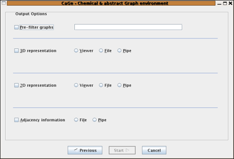
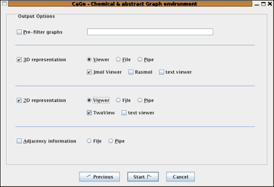
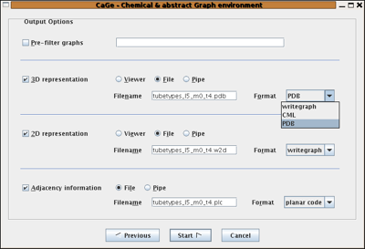

Output Options
After choosing a generator and setting all its options, the final step is to tell CaGe which kind(s) of embeddings you want (2D and/or 3D) and whether you want to visually inspect results or run a background task to store the complete result set in a file.
In the Output Options window
many controls are actually inivisible until you make choices that
reveal them. All you see initially are the prefilter checkbox,
the dimension checkboxes
(labelled "3D/2D representation") and, for both dimensions,
the output mode radio buttons, named "Viewer" and "File/Pipe".
We could have hidden these radio buttons as well, but they offer a shortcut:
Click either "Viewer" or "File/Pipe" for any dimension,
and the respective dimension checkbox will be selected automatically,
saving one click.
The topmost checkbox, "Pre-filter Graphs", will activate a text input when clicked. You are expected to enter a command here, and this command will be connected to the generator's output using a pipe. The command will therefore be able to read graphs on standard input as they come from the generator (which generally will be non-embedded graphs), and CaGe will expect to read some graphs, in one of the formats supported by CaGe, from the filter command's standard output. (Your command can itself be a "pipeline" -- see below for more details.)

Viewer output
Our second screenshot shows the Output Options window after the two "Viewer" radio buttons for 2D and 3D have been clicked. Just below each of these radio buttons, a row of viewer checkboxes has appeared. Select any number of these checkboxes to choose one or more viewers for each dimension. CaGe will not let you deselect all viewer checkboxes, you have to uncheck the respective dimension checkbox instead. If one viewer is selected and you want to switch to another, you would have to select that other viewer first and then deselect the current one, an unintuitive clicking sequence for many users. But there is a shortcut: You can shift-click a viewer to select it "exclusively", deselecting all other viewers.
The "text viewer" shows all coordinates (2D and 3D) that you have chosen to produce, in one window. Therefore, the "text viewer" checkboxes shown in the 3D and 2D areas refer to the same viewer window. Deselecting the "text viewer" checkbox in one dimension will also deselect it in the other. If the text viewer has been the only selected viewer in that other dimension (it won't be in the dimension where CaGe has let you deselect it), CaGe will deselect that other dimension altogether.

File output
In the third screenshot you see all the controls that appear, in place of the viewer checkboxes, if you select the "File/Pipe" checkboxes and/or the "Adjacency information" checkbox (which you might call the zero dimension checkbox -- there is no zero-D viewer and therefore no choice of viewer vs. file output for "adjacency"). Whereever you choose file or pipe output, you are asked for the destination and the format to use. For each generated graph, CaGe will create any requested embeddings and write the embedded graph to the given destinations in the selected formats. In the screenshot, the format box for 3D has been clicked on to reveal the available 3D formats. CaGe actually uses just a small subset of both the PDB and CML languages.
Where your data is saved
You supply all save destinations via a text field. Normally this will be interpreted as a filename, relative to the directory in which the generation process is run (see CaGe.Generators.RunDir in the configuration file CaGe.ini). If you start the destination with the '|' character, it will be interpreted as a pipeline. CaGe will start this pipeline and write to its standard input.
A pipeline is a sequence of commands, separated by '|' characters, with each command's standard output connected to the next command's standard input --, but no other shell interpretation will be performed unless you call the shell as part of the command. All pipelines are also run in the directory given by CaGe.Generators.RunDir in CaGe.ini.
Either viewer output or file output
You can not select file output for some dimensions and viewer output for some others. CaGe will disable the "Next" button if you try. Remember that the "zero" dimension, adjacency information, only allows file output.

| Choosing
a generator window |
||